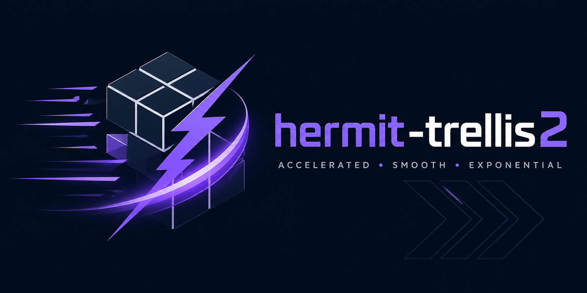
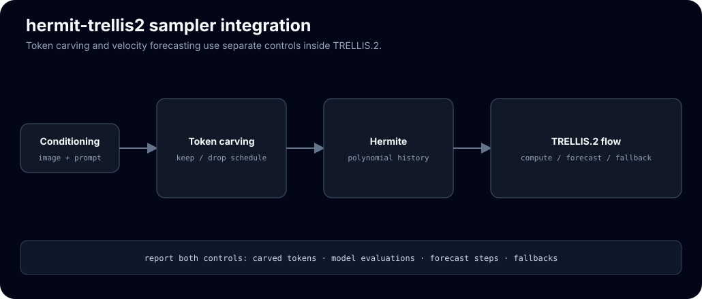
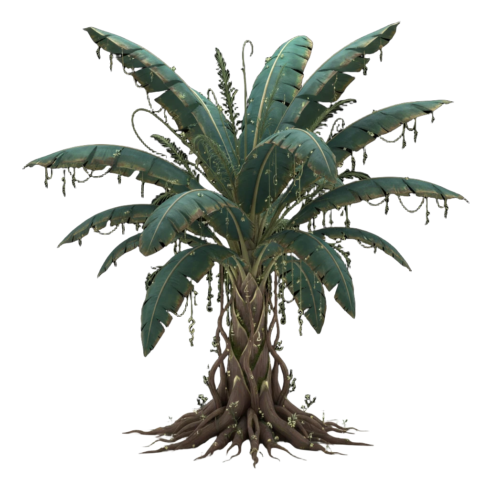

Hermite-cached acceleration for TRELLIS.2 image-to-3D
Training-free Hermite carved-hybrid for TRELLIS.2-4B image-to-3D: it forecasts the final CFG-combined velocity with a dual-scaled Hermite basis on the sparse-structure stage and carves structured-latent tokens. Weights, decoders and the full 1024_cascade mesh + texture are left untouched.
git clone https://github.com/Archerkattri/hermit-trellis2 cd hermit-trellis2 # TRELLIS.2 runtime deps (torch, flash-attn, spconv/flex_gemm, o-voxel, cumesh, # nvdiffrast) per microsoft/TRELLIS.2. Place / symlink weights at ckpts/TRELLIS.2-4B. # Deployment-contract runtime (budget/telemetry/manifest): pip install "hicache-pp @ git+https://github.com/Archerkattri/hicache-plus-plus@master"
01
Evidence
| End-to-end speedup | 1.88× (6.26 s vs 11.75 s base, RTX 5090, full 1024_cascade) |
|---|---|
| F1@0.05 mean | 0.869 vs base 0.860 (TaylorSeer sibling 0.900) |
| F1 median | 0.957 vs base 0.932 |
| Chamfer distance | 0.059 vs base 0.057, within run-to-run noise |
| Benchmark scope | 35 of 40 Toys4K objects completed by all three rows, seed 42 |
| SS forecast interval | compute 1 step, forecast 1 (GF_HICACHE_SS_INTERVAL=2) |
| SLaT carve ratio | 0.10 of tokens cached per step (GF_CARVE_RATIO) |
| SS first-enhance | first 6 steps always computed (GF_HICACHE_FIRST_ENHANCE) |
02
Media




03
Install & verify
# 5 CPU contract tests (CI job cpu-contract: torch CPU + hicache-pp master) python tests/test_hicache_contract.py # expected: 5 x [PASS]
04
Limits
What this release does not claim (from the release notes):
- The historical-results card “is not a current acceptance result and does not establish a universal speedup, losslessness, or quality ordering.”
- “Re-run the manifest command in
example_faster.pyon the target GPU before making a new claim.” - “The published numbers above were measured with the as-released code and remain valid as-measured; re-validation on this model is pending.”